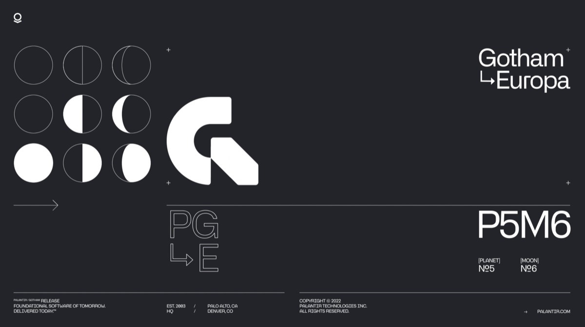
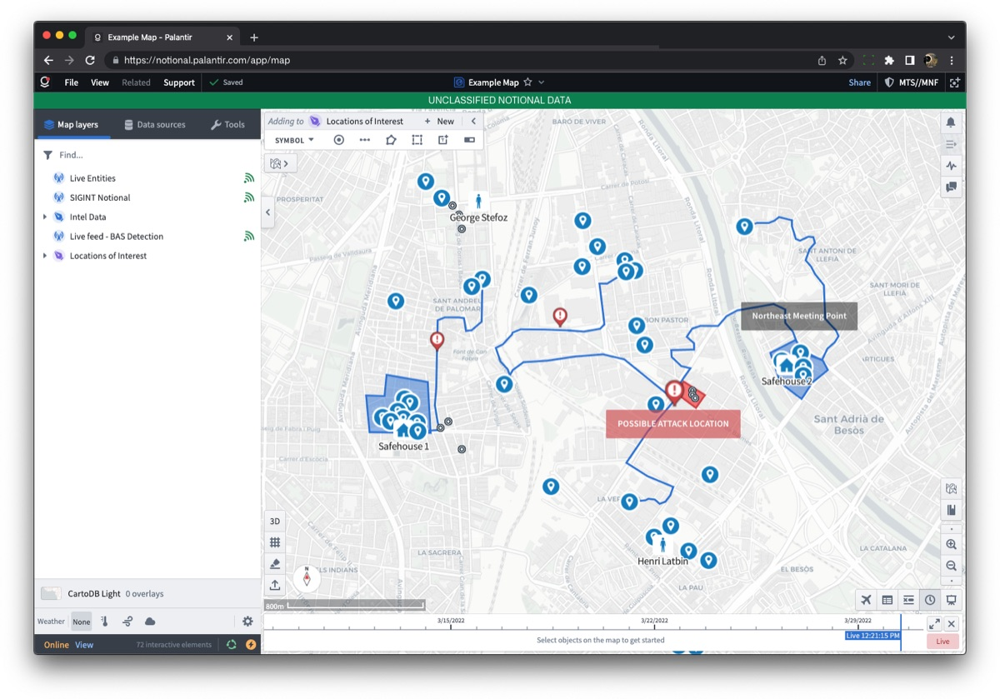

Introducing Palantir Gotham → Europa
Intelligence and law enforcement agencies around the world have relied on Palantir to power their most critical work while safeguarding their most sensitive data.
Europa represents the most significant upgrade ever to the software that makes this possible.
The newest, most powerful version of Gotham has arrived.
Palantir has always been infrastructure-agnostic, as our work requires meeting our customers wherever they are in the world. Europa brings new capabilities to allow customers granular control over their infrastructure and data sovereignty.
Organisations can adopt hybrid hosting solutions and plug in preferred local AI vendors at the place where each vendor can deliver the most value.
The functionality in Palantir's Europa release has changed how my organisation fights crime. In addition to protecting data better, we are able to incorporate digital forensics into our workflows in ways that we could only imagine just a few years ago.

Play Video
Secure collaboration made simple
Europa continues to define how analysts and operators work together on even the most sensitive, regulated data and workflows. The Gotham workspace has been re-designed from the foundation to maximize both security and speed of discovery. Building off of our success with Dossier, Chat, and Slides are brand new Europa features that streamline live, secure, synchronous collaboration, using real-time information and Gotham artifacts.
Machine learning capabilities for every type of data
Deploy machine learning models at scale to detect object and event matches across varying sensor data types, satellite imagery, audio, text, and full-motion video. Analyse thousands of hours of material in a matter of minutes to detect object and event matches. The Europa ecosystem makes it simple to integrate 3rd party AI/ML models, so that agencies can choose the models that best suit their needs.
State of the art full-motion video capabilities
Europa's video capabilities layer integrated intelligence from Gotham and AI detection models directly into live video streams, allowing users to leverage video to support decisions in ways that have previously been impossible. This capability is backed by Europa's new high-scale spatiotemporal data system.
Audio capabilities, powered by AI
Analysts can review thousands of audio clips right within Europa with the new machine learning-powered audio module. Audio can be transcribed and translated, and entities can be extracted.
Web-browser enabled
Our most requested platform update is now live: users can work in Europa right from their web browsers and collaborate directly with users in Gotham's desktop workspace. With Europa, users can also work in Palantir directly from their web browsers, empowering critical new workflows in more environments than ever.

The security and data integration features in Palantir's Europa release have allowed us to work with data that we simply could not work with before. This work has become some of our most important and operationally relevant work in the world today--and it would not be happening without Palantir.
Designed for the future of intelligence and law enforcement
Please see our Privacy Policy regarding how we will handle this information.